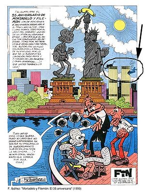
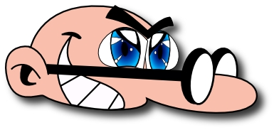

Mortadelo y Filemón
 De: La Frikipedia, la enciclopedia extremadamente seria.
De: La Frikipedia, la enciclopedia extremadamente seria.

Los dos agentes no se cortan un pelo
jo, jo, joEstamos en el año 3459 d.C. Los japoneses han derrotado definitivamente a los yankis, pero cuando parecía que Japón iba a proclamar su dominio total sobre el mundo, sus planes fueron desbaratados por un narigudo con gafas y un calvo, Mortadelo y Filemón. Pero la historia de como llegaron hasta ahí se remonta a varios años atrás.
La historia de Mortadelo y Filemón
Mortadelo y Filemón nacieron en Borricón de Arriba y Valdeburras del Melonar respectivamente. Fueron los primeros hombres creados por Dios pero que no salen en la Biblia por ser políticamente correctos. Ambas ciudades están situadas en la república de Caniles. Como últimos supervivientes Supersaiyans, se encontraron en las filas del INEM, mientras buscaban trabajo como criadores de lémures. Después de un épico combate entre ambos, en el cual acabaron dándose cuenta de que no podría vencer nadie porque estaban muy igualados en cuanto a poder[1] decidieron unirse como pareja de detectives por el bien de la humanidad.
Se convirtieron en los mejores agentes secretos del mundo tras derrotar a Anacleto en un torneo de 768 partidas de Profesor Bacterio. Ofelia, debido a su gran amor a Mortadelo, estuvo a punto de ahogarlo entre sus gigantescos profesor Bacterio. Acto seguido Mortadelo libró a Ofelia de su locura.
 Mortadelo y Filemón fueron a
Nueva York el 11S para evitar el atentado contra las torres gemelas,por desgracia Ibañez sufrió un accidente y tuvieron que acudir en su ayuda.
Se convirtieron en los agentes más duros del mundo tras un intenso entrenamiento, no importaba cuantas hostias recibieran, cuantas caídas de 56 pisos soportaran, siempre sobrevivían. Además, tenían la capacidad de sacar las armas más mortíferas conocidas e imaginadas por el hombre (y las no conocidas y las no imaginadas también) de la nada. Tal era su poder, que ni siquiera Sadam Hussein pudo igualar.
Su momento cumbre fue cuando derrotaron en un combate épico a Mazinger Z, y a Takeshi Kitano en la organización de superhéroes japoneses más grande jamás vista. Pero no pudieron hacer nada contra Mortadelo y Filemón, que salvaron así el mundo.
Curiosidades
- Han aguantado millones de explosiones de nitroglicerina, bombas atómicas, misiles, granadas; también han sido perforados por balas hasta que ni se les veía; han sido mordidos por tiburones; han caidos muchas veces desde, como mínimo, un octavo piso... y ahí siguen.
- Pueden fusionarse en una sola persona, pero nunca lo han hecho
- Las gafas de Mortadelo están fabricadas con una aleación de Adamantium.
- Ofelia es la primera fantasía sexual de todos los españoles, muy por delante de Elsa Pataky.
- Las aventuras gráficas de Mortadelo y Filemón como "El sulfato atómico" "Dos Vaqueros chapuceros" o "Terror,espanto y pavor" fueron proclamadas como los mejores videojuegos del mundo por diversas universidades estadounidenses. Solo "Hollywood Monsters" pudo hacerles frente.
- Mortadelo y Filemón protegieron a Saddat y a Kennedy
- Los disfraces de Mortadelo son los mejores disfraces del mundo, se ponen de una manera instantánea, logra las características del personaje del que se disfraza y encima es un camuflaje perfecto, ya que nunca lo reconocen en sus misiones de espionaje (aunque Mortadelo se deje siempre el careto sin camuflar).
- Pablo escribió una carta a Filemón (y a los Efesios, Tesalonicenses y Corintios entre otros).
- En el año 2013 se estrenará la película 007 contra Mortadelo y Filemón en la que morirá al fin, el agente James Bond.
- Se sabe que grandes corporaciones tratan de hacerse con sus servicios, desde la traicionera Grupo Prisa o el de Marina d'Or, aunque se supone que otros candidatos como la macroempresa de espionaje Portal de la Sota están más cerca de hacerse con un contrato por su parte.
- Mortadelo ha sacado la puntuación del 100% (porcentaje que te describe como "Acuda a un psiquiatra") en el mítico Friki Test.
- Filemón, por su parte, es capaz de llegar al nivel "Dios mío, que alguien le detenga" del Unreal Tournament 2004 en más de 369 ocasiones en tan solo una partida de cinco minutos, y ha sobrevivido a 394332598 oleadas en el modo "Invasión".
- Filemon tiene un gran arsenal de armas que usa contra Mortadelo cuando se enfada, pero nunca lo utiliza contra sus enemigos.
- Mortadelo y Filemón salvaron la Tierra de ser devorada por Galactus, ofreciéndole a Belén Esteban como sacrificio humano.
Batallas míticas en las que han intervenido
- La batalla por el Abismo de Helm, con Mortadelo cubriendo el flanco de los Rohan. (En realidad, fue Mortadelo quien empujó a uno de los arqueros para que disparara "accidentalmente" la primera flecha que desafió a los orcos).
- La Civil War de los Superhéroes Marvel: Se pelearon el uno contra el otro por una disputa relacionada con las capacidades sexuales de Spiderman, resultando vencedor Mortadelo por descalificación, ya que Filemón uso un objeto (o porra del quinze).
- La Guerra de la M-30: Donde Filemón apoyó al bando obrero por un salario digno, y Mortadelo reivindicaba el derecho de los peatones a no más socavones, pero todo acabó cuando, por error, se le cayó un arsenal completo de granadas en el pavimento, empeorando aún más el problema.
- La Guerra por la audiencia: Mortadelo y Filemón defendieron con uñas y dientes al programa Clan Foot, que defendían a Los Serrano. Pero cuando se dieron cuenta de la gran farsa que se escondía tras la organización de Antena 3, la traicionaron vendiendo el programa a Telele Cinco, donde se erradicó la amenaza televisiva de raiz.
- El Día F (o La ofensiva de las tropas de choque del Tirano Geyper): Les ganaron en tres partidas consecutivas de Mus (haciendo trampas), dejando a Fuerza Brutal sin sus Brutos Calzones.
- La batalla de Taiwán, por vencer el dominio del Pato Donald. Salieron victoriorsos gracias a la inestimable ayuda de 557 millones de Wombats a los que entrenaron y criaron como si fueran hijos propios.
- El Primer Gran Espiazamiento: Así se le llamó al día en que Mortadelo y Filemón fueron a las rebajas de Enero en el año 1997. No quedó títere con cabeza (propia).
- El Gran Botellón II: Mortadelo y Filemón arrasaron a 34 adolescentes acusados de beber sin responsabilidad con el uso de la Espada Excalibur, y ambas las posee Filemón.
- La Guerra por la chocolatina: Tal vez la peor de todas. Y esque una golosina abandonada en medio de una oficina llena de empleados insatisfechos y hambrientos cual hienas puede llegar a ser una enorme tentación... Curiosamente, esta batalla no la ganaron ni Mortadelo ni Filemón, sino el nuevo empleado del mantenimiento, un tal Bob Esponja.
Arsenal de armas de destrucción masiva de Filemón
Se rumorea que Filemón posee más armas mortales que cualquier tropa militar de EE. UU., y aquí tan solo podemos apuntar un 0,1% de todo el arsenal del que dispone para salvar al mundo o, en todo caso, masacrar a Mortadelo:

Filemón también es amigo de
Yamcha.
- La Pulidora gigante destroza-aceras (Útil para los días en que te sientes sucio).
- El Machaca-Craneos Acojonante (Un matamoscas).
- La succionaentes 4021.
- El Ultra Bazooka 2000 (Nuevo modelo especializado en despachurrar a engendros calvos con gafas y vestidos con sotana). Se lo prestó el famoso guerrero Yamcha, antes de retirarse.
- La espada mortal de FF VII, robada a Cloud cuando estaba en el baño, haciendo sus necesidades mientras mataba una rata
- La Jeringa Venenosa Mata-Rinocerontes (Muchos afirman que solo un pinchazo sería capaz de tumbar a Galactus en un día tonto).
- Kriptonita (Por si las moscas).
- El Gran, Brutal, Despampanante y Repulsivo Soplete Gigante.
- La Ultra Puta Rata (Híbrido entre ratón, lobo y alien que guarda en una jaula).
- La, ejem... La Pistola... Errr... Bang, bang.
- El Yamakasi, capaz de triturar 20 edificios (con gente dentro) en un nanosegundo.
- Una Guadaña Afilada, arrebatada de manos de la propia mus).
- Cocodrilo (El protagonista de esa película que plagiaba a Tiburón).
- Un escopetón de caza con un cargamento adicional de trescientos perdigones de saliva. No mata, pero jode un huevo.
- El Jebi Machin Gun (Arma también usada en la mítica guerra por la conquista del Tanque de Hierro o Metal Slug).
- Su león mascota (Lo tiene en una jaula, obligándole a no mantener relaciones sexuales con hembras que no sean el osito de peluche que le deja como única compañia, y lo alimenta a base de potitos Hacendado. Esto acrecienta su rabia día tras día, y, cuando Filemón le deja suelto, no mata a sus enemigos, diréctamente los borra del mapa, tras una corta violación felina).
Personas, animales u objetos en que puede disfrazarse Mortadelo
(O sease, puede estar en cualquier parte, yo de tí, maleante, no saldría ni a la calle)
 Mortadelo como el Espía Mojuki Ito en el Manga "Tutor Hitman
Reborn!"
- Chuck Norris, aunque no consigue ni una 1/100000000000000000000000000000000000000000000000000000000000000 de su fuerza, pero acojona
- George W. Bush (Para pillar desprevenidos a políticos corruptos; nadie se imagina que este tío vaya a volverse loco y vaya a ponerse a disparar a sus propios compañeros... ¿No?).
- Jose Luís Moreno (Una vez al mes, pasa por cualquier cadena de televisión donde el tío éste haya trabajado, o sea, cualquiera, y se saca un dinerillo por los derechos intelectuales).
- Popeye (Para pasar desapercibido entre la gente. Si te pilla, se comerá una lata de espinacas que encontrará casualmente por ahí, y...)
- Poltergeist, y te escamochará contra la pared).
- Perro meándose en árbol (Puede ser el árbol... o puede ser el perro... ¡Ñia, ñia, ñiaaaa!).
- El Increíble Hulk (No sabemos para qué coño le sirve este disfraz).
- Arnold Schwarzenegger (Sí, sí, también puede disfrazarse como él).
- Barril de Alquitrán (Es muy gore lo que te hace, mejor esto no lo apuntamos).
- Pared (Se hace uno con la pared de ladrillo, y, a la menor oportunidad, aparece súbitamente y te rebana el pescuezo, como John Rambo).
- Esa abuelita tan simpática y amable del quinto izquierda (¡No te fies; si te pide azucar, huye o caerás en sus redes!)
- Irma, aunque solo consigue encontrarse de bruces con la salidorra de Ofelia).
- El Hombre Enmascarado: Aquí Mortadelo demuestra que es un friki de cuidado, al ser capaz de acordarse de un gran superhéroe al que practicamente el 90% de los españoles ha olvidado ya. Cuando se enfrenta a una horda de pandilleros de Los Santos liderados por Carl Johnson, el tío es capaz de plantarles cara en media carretara gritando: "Temblad, pues estais ante el Espíritu que Anda, terror de todos los indigenas canibales..."
- Elefante. Es sin duda, el disfraz más paranoico y rayante, aparte de el de ballena; pues, cuando se lo pone, la cabeza de Mortadelo sobresale por el otro extremo de la trompa, y nadie ha sabido explicar aún como coño se las arregla para hacer eso...
- Filemón (Cuando quiere hacerse pasar por gilipollas. Este disfraz no hace mucha gracia a su compañero...)
- Mortadelo (Sí, se disfraza de él mismo. Paradojico, no?)
- Terremoto (Harto bestia, pero efectivo; ya será bastante rayante para algunos poder disfrazarse de fenómeno natural intangible, así que si el ataque cardíaco no le mata al bandido, lo hará el edificio de treinta metros que se desploma sobre él).
- Braguitas (Se esconde en el cajón y cuando menos te lo esperas... Zas, en toda la boca!)
- Action Man (El Doctor X ha ido a alquilar una película porno... ¡Pero Action Man y su Nuevo Rinoceronte Africano Robotizado lo descuartizarán! ¡Estás muerto, Doctor X!)
- Street Sharks).
- De lo que sea, pero seguro que no hay huevos a disfrazarse de aire
- De Superman (hasta que intento volar tirandose por el balcon)
Notas
- ↑ Entre ambos no llegaban a alcanzar el nivel - 2 según CTM
Autor(es):
- Krusher
- Nexo
- Fordus
- Tricker priest
- Doctor grijander
- Max Slug
- Frikiman
- Roms
- Viktorkrumluisunoss
- Juansaman
Frikipedia 2005-2016, Licencia
GFDL 1.2 - Extraído por FrikiLeaks